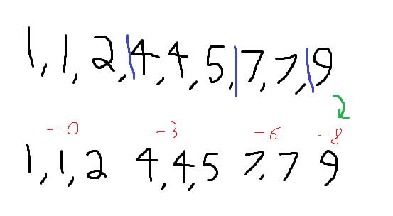
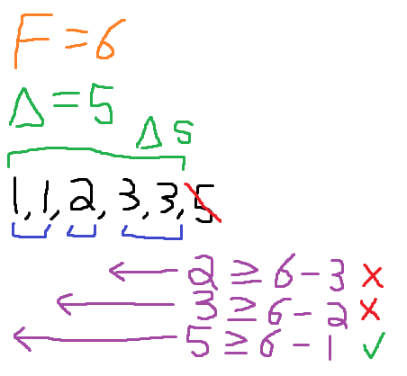

The value of the sequence 1 is 1.
First, to expand a sequence S in amognus us notation, split it into parts, before elements whose value is equal to their position.
Then, for each sub-sequence, reduce the first element until it is 1.
Reduce the rest of the elements in the sub-sequence by the same amount you reduced the first element by.

If there's multiple sub-sequences, the value of S is equal to the sum of the values of the subsequences.
However, this isn't enough for sequences with only a single sub-sequence.
In that case, do this:
Remove the last element, add 1, and call that F.
Group the sequence into "blocks", which are sequences of the same number.
Next, scan right to left by block.
Do this until the amount of numbers "scanned" ≥ F - what number the current block is made of.
Once you stop, take all of the scanned blocks, and call them ΔS. Let Δ be F - what number the leftmost block is made of.

With Δ and ΔS, we can define the FS of the sequence.
S[1] = ΔS. S[n+1] = S[n] concatenated to ΔS with each element increased by Δ * S.
And the value of S is sup{S[n] | n < ω}.